第 3 章 生物體的營養
3-1 食物中的養分與能量
重點梳理 ＆ 隨堂小試
一、六大營養素與能量功能
| 營養素 |
構成物質與主要生理功能 |
產生能量 |
| 醣類 |
1. 纖維素 可構成植物細胞壁。
2. 生物儲存能量之澱粉與動物肝糖。
|
可產生能量
(4 大卡/克) |
| 蛋白質 |
1. 組成動物的毛髮、指甲。
2. 組成肌肉組織與各類酵素主要原料。 |
可產生能量
(4 大卡/克) |
| 脂質 |
分布在動物皮膚下層，防止熱量散失，具保溫與保護內臟之效果。 |
可產生能量
(9 大卡/克) |
| 水 |
1. 生物體內含量最多的物質。
2. 細胞中多數物質需溶於水中才能進行各項生化代謝反應。
|
無法產生能量
(維持與調節生理機能)
|
| 礦物質 |
1. 構成組織：鈣 和 磷 是骨骼和牙齒的重要成分。
2. 調節機能：鐵 是人體血液紅血球造血的重要成分。
|
| 維生素 |
1. 又稱為 維他命。
2. 缺乏維生素 A 易患夜盲症；缺乏維生素 C 易造成壞血病與皮下出血。
|
二、澱粉與葡萄糖的檢驗測定
| 測定養分 |
使用檢驗藥劑 |
操作要點 |
反應變色情形 |
| 澱粉 |
碘液 |
常溫直接滴加 |
黃褐色 → 藍黑色（或紫紅色） |
| 葡萄糖 |
本氏液 |
隔水加熱 |
藍色 → 綠 → 黃 → 橙 → 紅色 |
三、隨堂概念評量
（C）
1. 下列有關維生素與礦物質對人體機能影響的敘述，何者正確？
(A) 維生素和礦物質均可產生熱量，提供人體生理活動所需
(B) 維生素的營養價值比礦物質高
(C) 缺乏維生素 A 可能導致夜盲症
(D) 鈣和鐵是骨骼最主要的成分
（B）
2. 細胞利用養分的順序為：醣類 → 脂質 → 蛋白質，除非身體醣類和脂質消耗殆盡，否則不會輕易使用蛋白質產能，因此蛋白質有「細胞內的高貴能源」之稱。這主要是因為蛋白質具有何種性質？
(A) 蛋白質種類很多
(B) 是組成細胞與生物體的重要原料（例如肌肉與酵素）
(C) 是生物體隔絕熱量散失的主要保溫構造
(D) 蛋白質本身完全無法產生能量
3-2 酵素與代謝作用
重點梳理 ＆ 實驗探究
一、代謝作用與酵素（酶）
1. 酵素是生物體內協助進行各項化學反應的
生物催化劑，又稱為
酶。
2. 生物體內物質的分解與合成，合稱為
代謝作用。
- 分解作用：將較大分子物質轉變成較小分子（例如：澱粉分解為葡萄糖，釋出能量）。
- 合成作用：將較小分子物質轉變成較大分子（例如：胺基酸合成為蛋白質，吸收能量）。
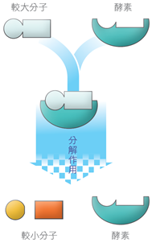
【分解作用】酵素＋受質 → 產物＋酵素（不變）
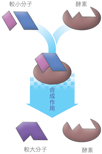
【合成作用】小分子受質結合 → 大分子產物
二、酵素的特性與影響活性的條件
1. 成分：大部分酵素的主要成分為 蛋白質。
2. 專一性：與酵素作用的物質稱為 受質。一種酵素通常只能催化一種或特定一類反應。
3. 重複使用：酵素在反應前後質量與性質均不改變，故 可以 重複使用。
4. 催化功能：酵素僅能加速反應速率，但無法增加生成物總量！
| 影響條件 |
活性變化原理與特性 |
曲線圖解與人體實例 |
| 溫度 |
• 溫度過低：活性受抑制減緩甚至停止，但酵素結構未破壞。
• 溫度過高：超過最適溫度會使蛋白質變性，永久失去活性！
• 人體內多數酵素最適作用溫度約為 37 ℃。
|
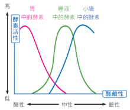
|
| 酸鹼度 (pH) |
• 每種酵素各有特定最適酸鹼範圍。
• 胃蛋白酶：適合在 酸性 環境中作用。
• 唾液澱粉酶：接近中性；小腸內酵素：適合在 弱鹼性 環境作用。
|
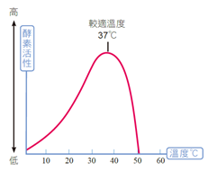
|
三、探究實驗：唾液中酵素的分解作用
| 試管編號 |
反應溶液 |
添加物 |
水浴溫度條件 |
檢驗試劑 |
隔水加熱變色結果 |
| 甲管 |
2 mL 澱粉液 |
2 mL 唾液 |
放入 37 ℃ 溫水 |
2 mL 本氏液 |
紅色（或橙色） (澱粉被分解出葡萄糖) |
| 乙管 |
2 mL 澱粉液 |
2 mL 水 (對照) |
放入 37 ℃ 溫水 |
2 mL 本氏液 |
藍色 (無酵素，未產生葡萄糖) |
| 丙管 |
2 mL 澱粉液 |
2 mL 唾液 |
放入 100 ℃ 沸水 |
2 mL 本氏液 |
藍色 (高溫使澱粉酶永久變性失效) |
| 丁管 |
2 mL 澱粉液 |
2 mL 唾液 |
放在 25 ℃ 室溫 |
2 mL 本氏液 |
黃色/橙色 (活性較 37℃ 慢但仍有作用) |
四、隨堂小試
（D）
1. 下列敘述何者不是酵素的特性或功能？
(A) 加速特定化學反應的進行
(B) 有酸鹼性範圍限制
(C) 有溫度範圍限制
(D) 可以增加反應最後的生成物總量
（D）
2. 酵素具有「專一性」，請問何謂專一性？
(A) 一種酵素只能在某一段特定的消化道中發揮作用
(B) 一個酵素分子只能作用一次，反應結束後即破壞消失
(C) 一種酵素只能在某一酸鹼範圍內進行反應
(D) 一種酵素的受質結合部位只能促進特定反應進行
3-3 植物如何製造養分（一）
葉片構造與光合作用機制
一、植物葉片的細部構造與機能
1. 表皮層：
- 表皮細胞：排列緊密無間隙，無色透明（無葉綠體），具有保護葉片內部組織之功能。
- 角質層：覆蓋於表皮細胞外層的蠟質，能防止葉內 水分 蒸散散失。
- 保衛細胞：成對半月形，細胞內含有葉綠體！兩個保衛細胞中央圍成 氣孔，為氣體與水氣進出主要通道。
2. 葉肉組織：介於上下表皮之間，細胞內含有大量顆粒狀的
葉綠體，是植物進行
光合作用的主要場所。
3. 葉脈（維管束）：分布於葉肉中，木質部輸送
水分 與礦物質；韌皮部輸送光合作用製造之
養分，並具支持葉片功能。
二、光合作用的原理與化學歷程
葉綠體內的
葉綠素吸收
光能，將根部吸收的水分與氣孔進入的二氧化碳轉換成養分：
水 ＋ 二氧化碳 ＋ 光能 ──(葉綠體/葉綠素)──→ 葡萄糖 ＋ 氧氣 ＋ 水
- 光反應：葉綠素吸收太陽光能，將水分解產生氧氣（釋放至大氣中），並將能量儲存。
- 碳反應（暗反應）：利用光反應產生的能量與酵素催化，將二氧化碳轉變為葡萄糖和水。
- 葡萄糖可轉變成澱粉暫存於葉片，夜晚再轉變成蔗糖經由韌皮部運送至植物各部。
三、隨堂概念評量
（A）
1. 下列關於植物葉片構造的敘述，何者正確？
(A) 角質層能有效防止水分散失
(B) 葉脈為葉中的維管束，其作用僅為單向運送水分
(C) 氣孔是葉片行光合作用的最主要場所
(D) 葉肉中的細胞不含葉綠體，僅具有保護內部功能
（C）
2. 有關植物葉片各細胞構造的敘述，下列何者錯誤？
(A) 表皮細胞具有保護葉片內部組織的功能
(B) 葉綠體是植物行光合作用的主要胞器
(C) 保衛細胞主要的功能是保護葉片，內部不具葉綠體
(D) 葉脈內部具有維管束，負責輸送養分與水分
（A）
3. 關於綠色植物光合作用的敘述，下列何者錯誤？
(A) 反應原料是二氧化碳和氧氣，生成產物為葡萄糖和水
(B) 光合作用整體化學歷程在植物細胞的葉綠體裡進行
(C) 必須以陽光光能作為啟動反應的能量來源
(D) 光反應分解水分子時會產生氧氣釋放至空氣中
（D）
4. 關於葉片氣孔的構造與調節，下列敘述何者正確？
(A) 一個氣孔由一對方形的表皮細胞組合而成
(B) 氣孔是吸收土壤中水分的主要通道
(C) 氣孔是存在於葉肉細胞間的微小空隙
(D) 氣孔開啟時可讓光合作用所需的二氧化碳擴散進入葉內
3-3 植物如何製造養分（二）
光合作用探究實驗與題組檢測
一、光與光合作用實驗探究（檢驗葉片是否製造澱粉）
| 步驟 |
操作圖解 |
實驗操作過程 |
實驗原理與關鍵意義 |
| 步驟 1 |
|
取盆栽綠色葉片，部分區域用鋁箔雙面包裹，移至陽光下一週。 |
遮光處為實驗組，未遮光照光處為對照組，探討光照對光合作用之影響。 |
| 步驟 2 |
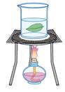 |
取下葉片，投入沸水中加熱約 2~3 分鐘。 |
高溫破壞葉片細胞膜，破壞並軟化表面的 角質層。 |
| 步驟 3 |
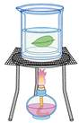 |
取出葉片，放入內盛酒精的燒杯中進行隔水加熱。 |
1. 酒精可溶出綠色的葉綠素脫色，避免干擾觀察。
2. 酒精易燃，隔水加熱可防止著火。
|
| 步驟 4 |
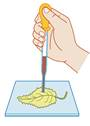 |
葉片在熱水中漂洗軟化，平鋪培養皿上，滴加 碘液。 |
檢驗葉片細胞內是否儲存光合作用產物澱粉。 |
【實驗結果判定】
• 照光部位（未包鋁箔）：含澱粉，呈現 藍黑色。
• 遮光部位（包覆鋁箔）：無澱粉，呈現碘液原本之 黃褐色。
二、題組實戰檢測
（B）
5. 右圖為植物葉片橫切面構造示意圖，光合作用中所需的反應物——水，是由圖中何處構造進入葉肉細胞？
(A) 甲處（上表皮）
(B) 乙處（葉脈木質部）
(C) 丙處（下表皮細胞）
(D) 丁處（氣孔）
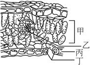
（A）
6. 右圖為植物葉片下表皮的顯微細部放大圖，則圖中標示的構造何者具有葉綠體可行光合作用？
(A) 只有甲（保衛細胞）
(B) 只有乙（氣孔）
(C) 只有丙（表皮細胞）
(D) 甲和丙皆可行光合作用
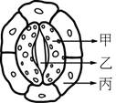
（A）
7. 植物進行光合作用時，下列何種原料是由植物根毛從土壤中吸收並經由維管束輸送？
(A) 水
(B) 氧氣
(C) 葡萄糖
(D) 二氧化碳
（A）
8. 小帆想探究植物在不同環境光照條件下，葉片行光合作用速率的快慢，他應根據下列哪一項數據進行測定推論最為合理？
(A) 單位時間內葉片釋放氧氣的量
(B) 單位時間內葉片消耗葉綠素的量
(C) 單位時間內葉片消耗葡萄糖的量
(D) 單位時間內葉片產生二氧化碳的量
3-4 人體如何獲得養分
消化系統、消化液與吸收
一、消化作用意義與大分子轉化
消化作用：大分子養分經物理咀嚼與化學酵素分解，轉變為小分子養分才能通過細胞膜進入細胞：
澱粉 ──→ 葡萄糖
蛋白質 ──→ 胺基酸
脂質 ──→ 脂肪酸 ＋ 甘油
二、人體消化系統與各消化腺功能
| 消化道 |
消化腺 |
分泌消化液 |
消化酵素與作用功能 |
主要吸收物質 |
| 口腔 |
唾腺 |
唾液 |
唾液澱粉酶，初步分解 澱粉 為麥芽糖 |
× |
| 咽、食道 |
× |
× |
肌肉蠕動推進食團，無消化作用 |
× |
| 胃 |
胃腺 |
胃液 |
含鹽酸（強酸殺菌）與胃蛋白酶，初步分解 蛋白質 |
少量酒精與水分 |
| 小腸 |
肝臟 |
膽汁 |
不含酵素！儲存於膽囊，注入十二指腸，乳化 脂質。 |
養分吸收最主要場所！
葡萄糖、胺基酸、脂肪酸、甘油、水分
|
| 胰臟 |
胰液 |
注入小腸，含消化醣類、蛋白質、脂質的多種酵素 |
| 腸腺 |
腸液 |
含分解醣類和蛋白質之酵素，完成最終消化 |
| 大腸 |
× |
× |
吸收未消化的殘渣中多餘 水分，形成糞便 |
水分與無機鹽 |
【營養素在消化道含量變化曲線圖解】
• 曲線甲（口腔開始下降）：澱粉。
• 曲線乙（胃部開始下降）：蛋白質。
• 曲線丙（小腸才開始下降）：脂質。
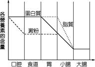
三、隨堂概念評量
（C）
1. 下列關於人體消化系統各器官的敘述，何者錯誤？
(A) 胃液內含鹽酸，環境為強酸性
(B) 消化道肌肉有節律地收縮與蠕動，能促進食物與消化液充分混合
(C) 膽汁含有豐富的消化酵素，能直接催化分解蛋白質
(D) 唾腺位於口腔周圍，分泌唾液能初步分解澱粉
（A）
2. 右圖為人體消化系統各構造示意圖，圖中標示的器官何者能分泌消化液注入消化管？
(A) 乙丙戊己（唾腺、胃、胰臟、小腸）
(B) 甲丙丁己
(C) 甲丁己庚
(D) 乙丙丁己
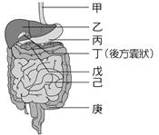
（D）
3. 邱伯伯罹患胃癌切除部分胃部，請問其飲食應適度減少何種食物的攝取，避免造成消化負擔？
(A) 蔬菜水果類
(B) 食用油脂類
(C) 五穀雜糧米飯類
(D) 蛋豆魚肉及奶類（富含蛋白質）
（A）
4. 某固體食物在人體消化器官平均停留時間為：口和食道 1 分鐘、胃 2 小時、小腸 8 小時、大腸 13 小時。推論食物入口後，蛋白質「開始」被分解與吸收的時間為何？
(A) 約 10 分鐘後開始分解；約 4 小時後在小腸進行吸收
(B) 約 15 秒鐘後開始分解；約 1 小時後進行吸收
(C) 約 2 小時後開始分解；約 10 小時後進行吸收
(D) 約 10 小時後開始分解；約 12 小時後進行吸收
第 3 章 生物體的營養 全章精華大歸納
全章核心知識架構與心智地圖
重點盤點 ＆ 考前總複習
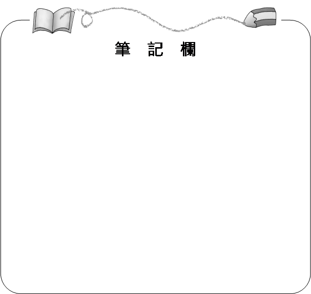
【第 3 章 生物體的營養】核心概念心智地圖
全章必考重點總盤點
| 小節主題 |
核心概念精華與常考盲點 |
| 3-1 養分與能量 |
• 產能養分：醣類 (4)、蛋白質 (4)、脂質 (9)。不產能：水（含量最多）、礦物質、維生素。
• 檢驗試劑：澱粉用 碘液 測（黃褐變藍黑）；葡萄糖用 本氏液 隔水加熱（藍變紅）。
|
| 3-2 酵素與代謝 |
• 主要成分為 蛋白質，具 專一性，反應前後不變可重複使用。
• 僅加速反應速率，不增加生成物質量！低溫抑制活性，高溫使酵素永久變性失效。
• 胃蛋白酶在強酸環境活性最佳；唾液澱粉酶在中性；小腸酵素在弱鹼性。
|
| 3-3 光合作用 |
• 原料：水分（根吸收）與二氧化碳（氣孔進入）。場所：葉肉與保衛細胞的 葉綠體。
• 產物：葡萄糖、氧氣、水。實驗以沸水軟化、酒精隔水加熱脫去葉綠素、滴碘液呈藍黑色。
|
| 3-4 人體消化 |
• 消化順序：口腔（澱粉）→ 胃（蛋白質）→ 小腸（醣類、蛋白質、脂質全部完成消化與吸收）。
• 膽汁不含消化酵素，由肝臟製造、膽囊儲存，能乳化脂質。
• 小腸內壁有無數皺襞與 絨毛，能大幅增加吸收水分與養分的 表面積！
|
課後學習自我檢核清單（課堂點擊訂正）
☑ 1. 我能區分產能營養素與不產能營養素，並記住熱量計算原則。
☑ 2. 我能正確說明酵素催化受質的專一性，並解釋溫度過高與過低對酵素的差別。
☑ 3. 我能繪出光合作用光反應與暗反應流程，並說出檢驗葉片澱粉實驗中酒精脫色的原理。
☑ 4. 我能指出葉片橫切面圖中角質層、表皮細胞、保衛細胞、葉肉與葉脈的功能。
☑ 5. 我能完整說出人體消化系統各消化道順序，並指出膽汁不含酵素的特性。
☑ 6. 我能說明小腸內壁絨毛構造對擴大吸收養分表面積的重要性。